Contents
Optimal Window Size
vectors1 = { lowThits, highThits, lowShits, highShits, highPhits };
vectors2 = { templow, temphigh, sradlow, sradhigh, prcphigh };
names = { 'Low Temperature', 'High Temperature', 'Low Solar Radiation', 'High Solar Radiation', 'High Precipitation' };
for index = 1:length(vectors1)
vector = vectors1{index};
vector2 = vectors2{index};
name = names{index};
bestHit = 0;
window = 0;
forecast = 0;
x1 = []; y1 = []; z1 = [];
x2 = []; y2 = []; z2 = [];
for i = 2:8
for j = 2:6
if((3*i*j)/(3*i + j) >= 4)
x1 = [x1 i];
y1 = [y1 j];
z1 = [z1 vector(i,j)];
if(vector(i,j) > bestHit)
bestHit = vector(i,j);
window = i;
forecast = j;
end
else
x2 = [x2 i];
y2 = [y2 j];
z2 = [z2 vector(i,j)];
end
end
end
figure
scatter3(x1,y1,z1,'*blue'), hold on
scatter3(x2,y2,z2,'*red');
xlabel('Modeling Window');
ylabel('Forecasting Window');
zlabel('Hit Rate');
title(name);
legend('KS Test Very Confident', 'KS Test Less Confident', 'Location', 'NorthEast');
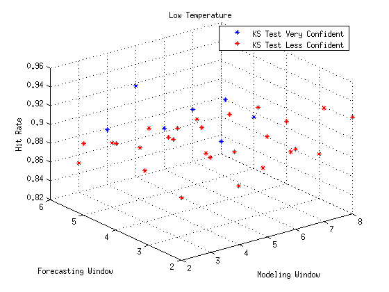 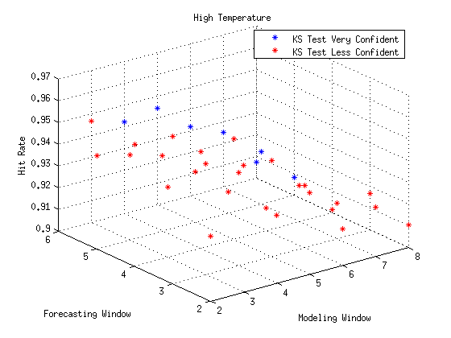 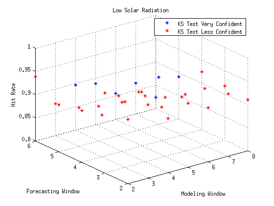 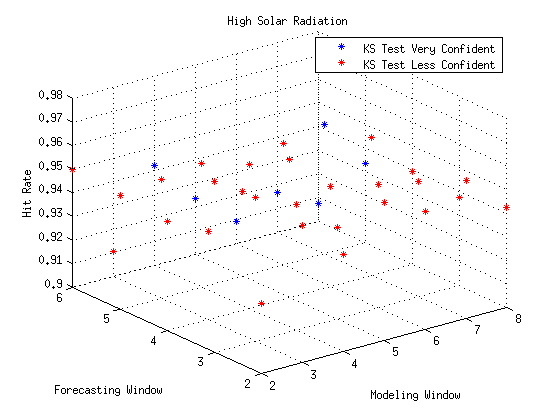 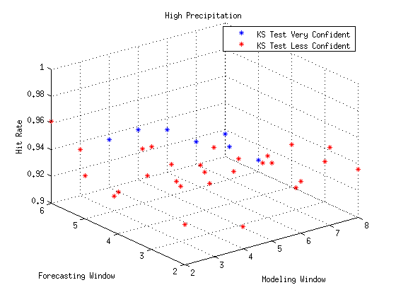
Validation
years2 = years(end-validation-window:end-forecast-window);
clear hits;
for y = years2
ys = y:y+window-1;
ys2 = y+window:y+window+forecast-1;
for m = 1 : 12
ts = sort([time(ys,prev(m)), time(ys,m), time(ys,next(m))]);
ts2 = time(ys2,m);
[H1, P1] = kstest2(vector2(ts), vector2(ts2));
hits(y-years2(1)+1,m) = ~H1;
end
end
figure
spy(hits);
axis xy
xlabel('Month');
ylabel(sprintf('Years Since %d', years(end)-validation));
title(sprintf('%s Hit Rate: %0.1f%%', name, 100*mean(hits(:))));
legend('Hit');
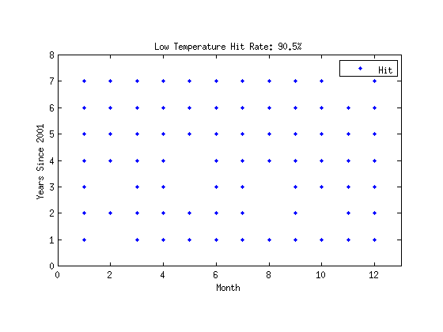 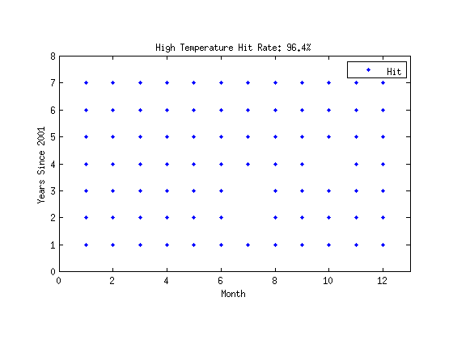 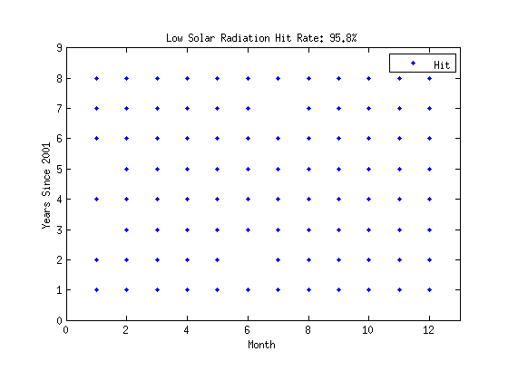 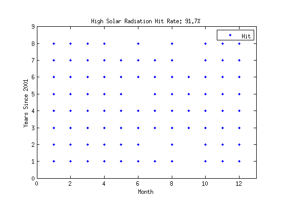 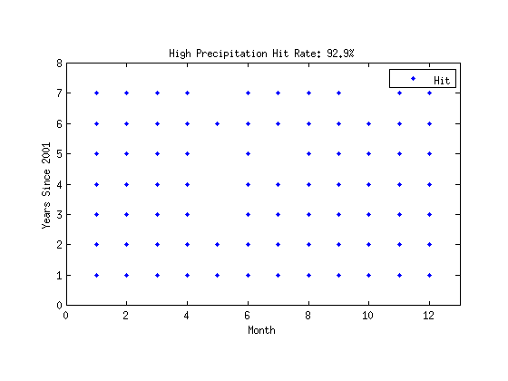
Predicting
ms = [1 4 7 10];
ys = years(end-window:end);
figure
for mi = 1:length(ms)
m = ms(mi); ts = sort([time(ys, prev(m)) time(ys, m) time(ys, next(m))]);
subplot(2,2,mi);
ecdf(vector2(ts));
xlabel('Proportion of Region');
ylabel('P(X < Proportion)');
title({ sprintf('ECDF Model for %s (%d - %d)', months{m}, ys(end)+1, ys(end)+forecast), name }, 'FontSize', 16);
end
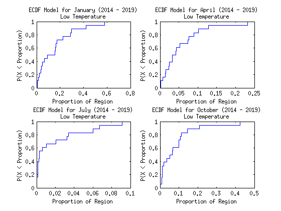 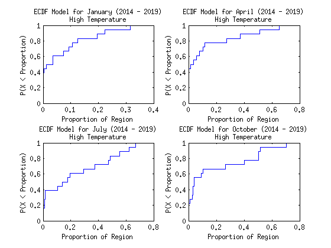 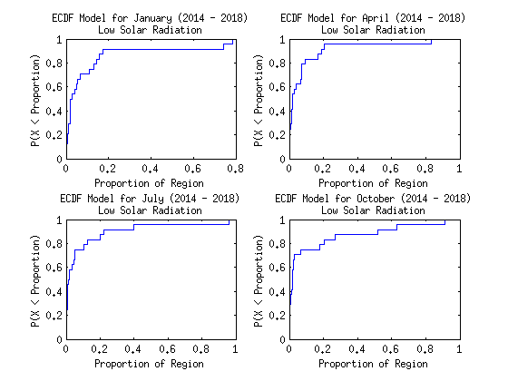 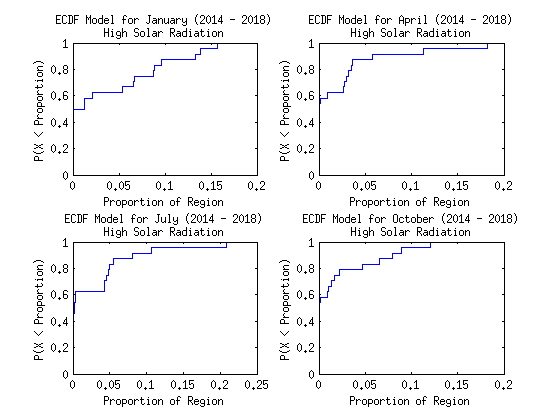 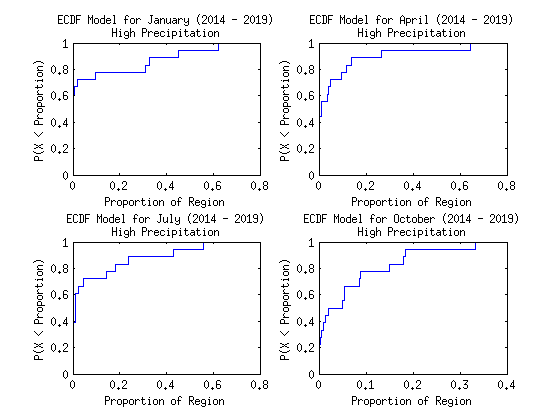
end